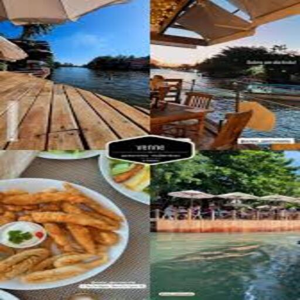
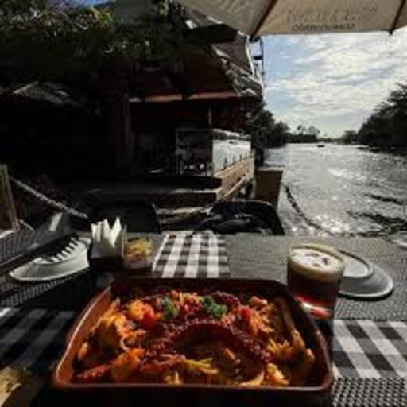
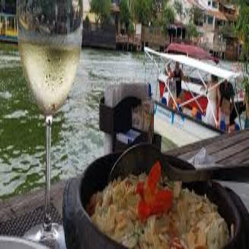
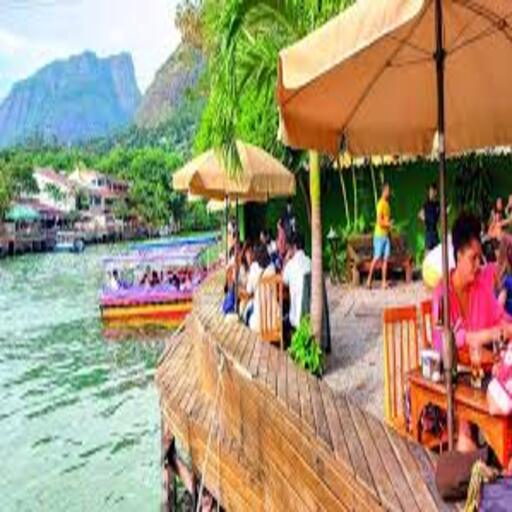
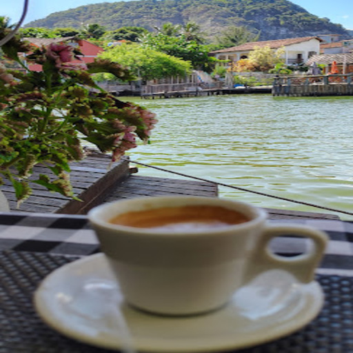
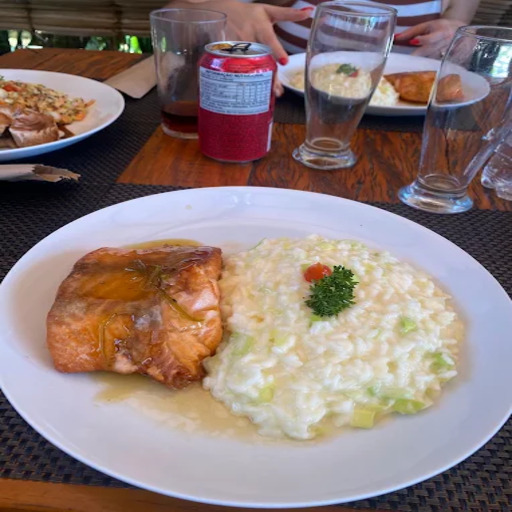
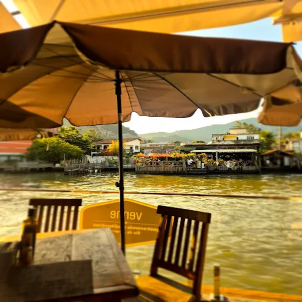
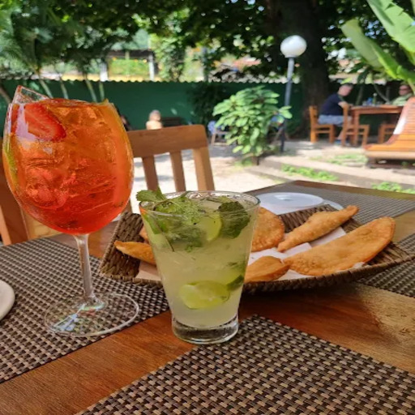

Venne Gastronomia
Experiência sofisticada, ambiente refinado e culinária mediterrânea.

O Venne Gastronomia se destaca na Ilha da Gigóia por oferecer uma experiência gastronômica mais sofisticada e refinada, combinando boa culinária com um ambiente extremamente elegante.
O restaurante apresenta uma proposta inspirada na culinária mediterrânea, valorizando ingredientes frescos, sabores equilibrados e pratos muito bem elaborados. O cardápio traz opções que misturam tradição e criatividade, sempre com atenção especial à qualidade dos ingredientes e à apresentação impecável.
🍷 Destaques & Atmosfera
- Culinária Mediterrânea: Uma proposta que valoriza o frescor e o equilíbrio de sabores, resultando em pratos autorais e marcantes.
- Ambiente Fino e Requintado: O espaço cria um clima ideal, intimista e romântico, perfeito para quem busca um almoço ou jantar especial durante a visita à ilha.
Para quem deseja viver uma experiência gastronômica diferenciada na Ilha da Gigóia, o Venne Gastronomia é uma das opções que combinam perfeitamente boa comida, ambiente de classe e uma atmosfera agradável.
📸 Conheça o Espaço







